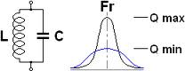
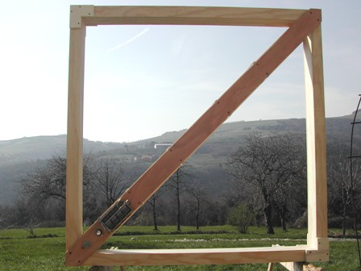
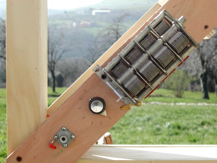

Tutti avranno visto, dal vero o in immagine, quelle belle antenne "della bisnonna" costituite da una struttura in legno più o meno elaborata a forma di rombo o di quadrato con avvolte alla periferia delle spire di filo, come quella in figura, adatta ad una radio molto vintage posta in un salotto borghese degli anni '20.

Questa è una classica antenna a telaio degli anni '20, molto efficiente (se ben dimensionata e accordata) per la radioricezione delle stazioni in onda lunga in auge in quel periodo., quando la sensibilità degli apparecchi era bassissima rispetto ad oggi.
Vi sono dei casi in cui questo tipo di antenne fanno ancora il loro dovere ed in certi casi sono insostituibili; naturalmente si tratta di esigenze particolari, come quella che vado a descrivere.
Avevo bisogno (come accennato precedetemente) di un dispositivo di ricezione per frequenze al di sotto dei 100 KHz e per segnali molto deboli.
Ho fatto l'esempio della stazione di Grimeton a 17,2 KHz, che arriva dalla Svezia solo per onda di terra (non riflessa) e quindi estremamente attenuata.
Senza entrare in ulteriori particolari (il discorso sulle antenne e sulla propagazione si farebbe interminabile, e dovrei pure cambiare il titolo del blog...) dico solo che per queste frequenze così basse può essere una ottima scelta una antenna accordata che sfrutti l'effetto risonanza di un grande circuito LC (induttanza, capacità).
In pratica una antenna a telaio (ma non da salotto!) con un sistema di accordo che permetta di variarne la sintonia in modo continuo tra i 100 e i 10 KHz (siamo sui 30 Km di lunghezza d'onda...).
Lo schema dell'antenna è un semplice circuito LC accordabile, dove L è l'induttanza (la bobina), C il condensatore (variabile) e Fr la frequenza di risonanza.

Ed ecco la realizzazione pratica:

Le dimensioni sono 115 cm di lato (la sezione del canale è ad U, larga 8 cm) ed il peso complessivo alla fine è risultato non indifferente.
Essendo nettamente direttiva va montata su opportuno supporto girevole (fissato lungo la diagonale posteriore) in modo da poterla orientare verso la stazione trasmittente.
La struttura è in legno multistrato e serve a contenere i 220 metri di filo da 0,75 mmq che formano la bobinona, con un'induttanza di circa 10 mH su una resistenza di pochi ohm, in modo da avere un Q il più alto possibile (omissis...).
Con la capacità residua di un condensatore variabile quadruplo da 2000 pF tutto aperto, il circuito risuona poco sotto i 100 KHz, come voluto.
Con il variabile tutto chiuso la risonanza scende a 37 KHz e tramite l'inserimento progressivo di altri condensatori fissi in parallelo si arriva fin sotto i 10 KHz con una capacità complessiva di circa 30000 pF.
Tutti i componenti devono essere di ottima qualità.

Anche se lo schema sembra banale, la realizzazione ha richiesto molto più tempo del previsto.
Oltre alla costruzione della struttura, all'inizio avevo avvolto 500 metri (!) di filo per ottenere subito una induttanza molto elevata per poi poter usare meno capacità possibile, dato che in un circuito LC il rendimento è maggiore quando è alto il rapporto induttanza/capacità.
Con tante spire ottenevo però solo una fortissima autorisonanza (dovuta alla capacità parassita fra le spire) che non riuscivo ad eliminare, ed in pratica nessuna sintonia era possibile.
Eliminando pian piano il filo in eccesso (e ogni volta controllando la risonanza con generatore ed oscilloscopio) sono giunto finalmente ai dati di induttanza/capacità detti sopra, che ritengo siano ottimali per questa specifica costruzione.
Il segnale da inviare al ricevitore con un cavo coassiale viene prelevato con un link di una sola spira avvolta sopra la bobina principale e la sintonia (oltre a quella del ricevitore) viene fatta regolando il condensatore varabile per il massimo segnale, inserendo quando richiesto i condensatori aggiuntivi per scendere in frequenza.
La stazione DCF77 da Francoforte che fa da test campione si riceve ora naturalmente con un segnale fortissimo.
Pur non essendoci niente di nuovo da scoprire, lo studio della ricezione nel range di frequenze così basso può essere molto interessante per chi ama (anche) queste cose.
In aggiunta, il 29 giugno prossimo è prenotato: io e Silverio saremo finalmente pronti a sentire l'alternatore di Grimeton come si deve! SAQ...SAQ...SAQ...
(Qualcuno che ha letto fin qui osserverà che il mondo è proprio pieno di gente strana... Confermo. E' proprio vero!)